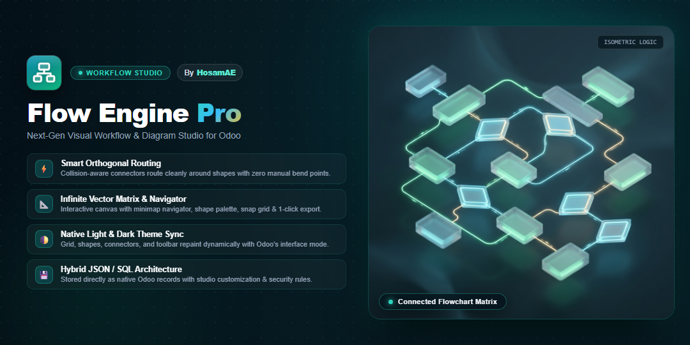
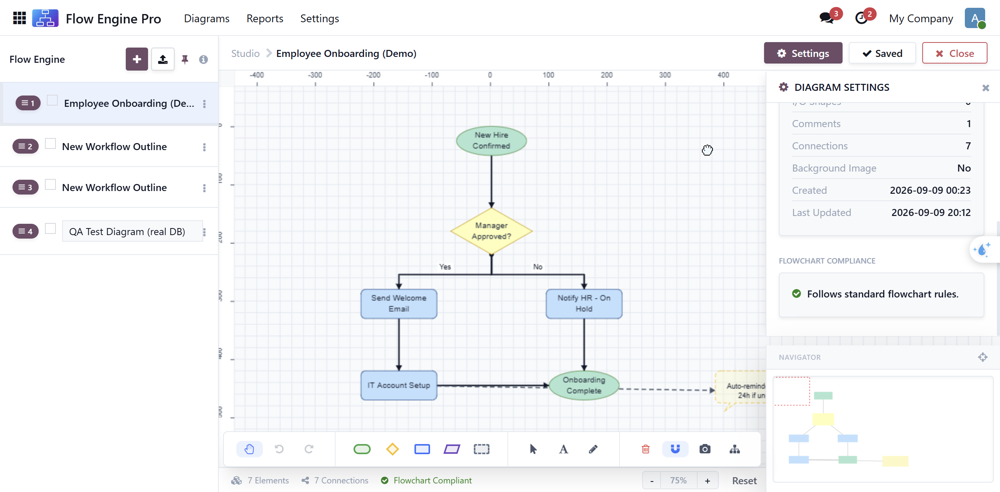

<!-- Google Fonts for premium typography -->
<link rel="preconnect" href="https://fonts.googleapis.com">
<link rel="preconnect" href="https://fonts.gstatic.com" crossorigin>
<link href="https://fonts.googleapis.com/css2?family=Outfit:wght@300;400;500;600;700;800&family=Plus+Jakarta+Sans:wght@300;400;500;600;700;800&display=swap" rel="stylesheet">

<section style="font-family: 'Plus Jakarta Sans', 'Outfit', Arial, sans-serif; color:#1e293b; max-width:1140px; margin:0 auto; padding: 20px 0; background: #ffffff;">

    <!-- Limited-time free offer -->
    <div style="display:flex; align-items:center; justify-content:center; gap:10px; flex-wrap:wrap; background:linear-gradient(135deg,#fff7ed,#ffedd5); border:1px solid rgba(234,88,12,0.25); border-radius:999px; padding:12px 24px; margin-bottom:24px; box-shadow:0 6px 20px rgba(234,88,12,0.08);">
        <span style="font-size:18px;">&#127881;</span>
        <span style="font-family:'Plus Jakarta Sans', sans-serif; font-size:14.5px; font-weight:700; color:#9a3412;">Free for a limited time</span>
        <span style="font-family:'Outfit', sans-serif; font-size:14px; color:#c2410c;">&mdash; install now. List price is $99.</span>
    </div>

    <!-- Banner -->
    <div style="border-radius:24px; overflow:hidden; margin-bottom:40px; box-shadow:0 20px 50px rgba(13, 148, 136, 0.2); border: 1px solid rgba(13, 148, 136, 0.15);">
        
    </div>

    <!-- Title -->
    <div style="text-align:center; margin-bottom:24px;">
        <h1 style="font-family: 'Plus Jakarta Sans', sans-serif; font-size:38px; font-weight:800; margin:0 0 12px 0; color:#0f766e; letter-spacing: -0.02em; line-height: 1.2;">Diagrams That Draw Themselves Straight.</h1>
        <p style="font-family: 'Outfit', sans-serif; font-size:19px; color:#475569; max-width:800px; margin:0 auto; line-height:1.6; font-weight: 400;">
            Build flowcharts directly inside Odoo. Flow Engine Pro's routing engine keeps every connector clean and orthogonal automatically &mdash; <strong>no dragging bend points, no crossed lines to untangle by hand.</strong>
        </p>
    </div>

    <div style="text-align:center; margin-bottom:56px;">
        <span style="display:inline-block; background:linear-gradient(135deg, #f0fdfa, #ccfbf1); color:#0f766e; font-weight:700; font-size:14px; letter-spacing:0.3px; padding:10px 24px; border-radius:999px; box-shadow: 0 4px 15px rgba(13, 148, 136, 0.08); font-family: 'Plus Jakarta Sans', sans-serif;">
            &#128200; Process maps, approval flows, onboarding checklists, IT runbooks, and more.
        </span>
    </div>

    <!-- Feature Showcase -->
    <div style="display:flex; flex-wrap:wrap; gap:32px; align-items:center; margin-bottom:64px; background:linear-gradient(135deg,#f0fdfa,#f8fafc); border-radius:24px; padding:40px; border: 1px solid rgba(13, 148, 136, 0.12); box-shadow: 0 10px 40px rgba(0, 0, 0, 0.02);">
        <div style="flex:1 1 360px;">
            <h2 style="font-family: 'Plus Jakarta Sans', sans-serif; font-size:26px; font-weight: 800; margin:0 0 16px 0; color:#1e1b4b; line-height: 1.3;">A Smart Canvas, Not a Whiteboard.</h2>
            <p style="font-family: 'Outfit', sans-serif; font-size:16px; color:#475569; line-height:1.7; margin:0 0 24px 0;">
                Drop shapes, connect them, and let the engine handle the geometry. Connectors automatically choose the cleanest side to enter and exit each shape, route around obstacles, and never cross a flow shape &mdash; even if that means taking a slightly longer path to stay clean.
            </p>
            <ul style="margin:0; padding:0; list-style:none; font-size:15px; color:#334155; font-family: 'Outfit', sans-serif;">
                <li style="margin-bottom:12px; display:flex; gap:12px; align-items: center;">
                    <span style="font-size: 20px;">&#128736;</span> <strong>Smart Orthogonal Routing:</strong> Automatic top/bottom/side attachment with collision-aware detours, no manual bend editing.
                </li>
                <li style="margin-bottom:12px; display:flex; gap:12px; align-items: center;">
                    <span style="font-size: 20px;">&#127761;</span> <strong>True Odoo Dark Mode:</strong> The canvas itself follows Odoo's theme &mdash; lines, fills and text all repaint for dark mode, not just the toolbar chrome.
                </li>
                <li style="margin-bottom:12px; display:flex; gap:12px; align-items: center;">
                    <span style="font-size: 20px;">&#127912;</span> <strong>Per-Category Styling:</strong> Independent font, shape, and border settings for Flow shapes vs. Comment notes, with a live preview right on the Settings page.</li>
                <li style="margin-bottom:12px; display:flex; gap:12px; align-items: center;">
                    <span style="font-size: 20px;">&#128506;</span> <strong>Navigator &amp; Snapshots:</strong> A minimap for large diagrams, plus one-click PNG capture and an auto-generated thumbnail per diagram.
                </li>
                <li style="margin-bottom:12px; display:flex; gap:12px; align-items: center;">
                    <span style="font-size: 20px;">&#9989;</span> <strong>Flowchart Compliance Check:</strong> Validates your diagram's structure &mdash; a Start and an End, no orphan shapes, every Decision branching into 2+ distinct labeled paths &mdash; with a quiet checkmark when it passes.
                </li>
                <li style="margin-bottom:12px; display:flex; gap:12px; align-items: center;">
                    <span style="font-size: 20px;">&#128269;</span> <strong>Search &amp; Pulse:</strong> Find a shape by name across every diagram &mdash; it opens the right one, pans to the shape, and pulses it for you.
                </li>
            </ul>
        </div>
        <div style="flex:1 1 360px;">
            <div style="background-color:#ffffff; border-radius:24px; padding:28px; border: 1px solid #e2e8f0;">
                <div style="display:flex; gap:8px; margin-bottom:20px; align-items: center;">
                    <div style="width:12px; height:12px; border-radius:50%; background-color:#ff5f56; display:inline-block;">&nbsp;</div>
                    <div style="width:12px; height:12px; border-radius:50%; background-color:#ffbd2e; display:inline-block;">&nbsp;</div>
                    <div style="width:12px; height:12px; border-radius:50%; background-color:#27c93f; display:inline-block;">&nbsp;</div>
                    <span style="margin-left:8px; color:#1e293b; font-size:13px; font-weight: 700; font-family: 'Plus Jakarta Sans', sans-serif;">Approval Flow</span>
                </div>
                <div style="display:flex; flex-direction:column; align-items:center; gap:10px;">
                    <div style="background:#a8e6cf; border-radius:14px; padding:8px 18px; font-size:12px; font-weight:700; color:#1a1a1a;">New Hire Confirmed</div>
                    <div style="width:2px; height:14px; background:#94a3b8;"></div>
                    <div style="background:#ffffba; border-radius:8px; padding:10px 20px; font-size:12px; font-weight:700; color:#1a1a1a; transform: rotate(0deg);">Manager Approved?</div>
                    <div style="display:flex; gap:60px; width:100%; justify-content:center; margin-top:4px;">
                        <div style="display:flex; flex-direction:column; align-items:center; gap:6px;">
                            <span style="font-size:10px; color:#64748b; font-weight:700;">YES</span>
                            <div style="background:#bae1ff; border-radius:10px; padding:8px 14px; font-size:11px; font-weight:700; color:#1a1a1a;">Send Welcome Email</div>
                        </div>
                        <div style="display:flex; flex-direction:column; align-items:center; gap:6px;">
                            <span style="font-size:10px; color:#64748b; font-weight:700;">NO</span>
                            <div style="background:#bae1ff; border-radius:10px; padding:8px 14px; font-size:11px; font-weight:700; color:#1a1a1a;">Notify HR</div>
                        </div>
                    </div>
                </div>
                <div style="margin-top:20px; font-size:12px; color:#64748b; text-align:center; font-family: 'Outfit', sans-serif;">
                    The routing engine keeps every branch aligned and crossing-free, automatically.
                </div>
            </div>
        </div>
    </div>

    <!-- Real Previews -->
    <div style="margin-top: 50px; margin-bottom: 50px;">
        <h2 style="font-family: 'Plus Jakarta Sans', sans-serif; font-size:28px; font-weight: 800; text-align:center; color: #1e1b4b; margin-bottom:32px;">Real Previews</h2>

        <div style="display: flex; flex-direction: column; gap: 40px; align-items: center;">
            <!-- Screenshot -->
            <div style="width: 100%; max-width: 1000px; border-radius: 16px; overflow: hidden; box-shadow: 0 15px 40px rgba(0,0,0,0.12); border: 1px solid #e2e8f0; background: #ffffff;">
                <h4 style="text-align: center; margin: 16px 0; font-family: 'Plus Jakarta Sans', sans-serif; color: #1e293b; font-size: 18px;">The Canvas IDE</h4>
                
            </div>
        </div>
        <p style="text-align:center; font-size:14px; color:#64748b; margin-top:20px; font-family:'Outfit', sans-serif;">
            Global and per-diagram appearance settings, with a live preview, are available from the app's own Settings page.
        </p>
    </div>

    <!-- Feature grid -->
    <h2 style="font-family: 'Plus Jakarta Sans', sans-serif; font-size:28px; font-weight: 800; text-align:center; color: #1e1b4b; margin-bottom:32px;">Powerful &amp; Flexible</h2>
    <div style="display:grid; grid-template-columns: repeat(auto-fit, minmax(280px, 1fr)); gap:24px; margin-bottom:64px;">

        <div style="background:rgba(255,255,255,0.8); border:1px solid rgba(226,232,240,0.8); border-radius:18px; padding:28px; box-shadow:0 8px 30px rgba(0,0,0,0.02);">
            <div style="font-size:32px; margin-bottom:14px;">&#128506;</div>
            <h3 style="margin:0 0 10px 0; font-size:18px; font-weight:700; color:#1e293b; font-family: 'Plus Jakarta Sans', sans-serif;">Navigator Minimap</h3>
            <p style="margin:0; font-size:14px; color:#64748b; line-height:1.6; font-family: 'Outfit', sans-serif;">
                Click anywhere on the minimap to jump straight there, even with the properties inspector panel open.
            </p>
        </div>

        <div style="background:rgba(255,255,255,0.8); border:1px solid rgba(226,232,240,0.8); border-radius:18px; padding:28px; box-shadow:0 8px 30px rgba(0,0,0,0.02);">
            <div style="font-size:32px; margin-bottom:14px;">&#128444;</div>
            <h3 style="margin:0 0 10px 0; font-size:18px; font-weight:700; color:#1e293b; font-family: 'Plus Jakarta Sans', sans-serif;">Per-Diagram Backgrounds</h3>
            <p style="margin:0; font-size:14px; color:#64748b; line-height:1.6; font-family: 'Outfit', sans-serif;">
                Attach a reference image to any individual diagram from its own menu &mdash; trace over a whiteboard photo or an existing chart.
            </p>
        </div>

        <div style="background:rgba(255,255,255,0.8); border:1px solid rgba(226,232,240,0.8); border-radius:18px; padding:28px; box-shadow:0 8px 30px rgba(0,0,0,0.02);">
            <div style="font-size:32px; margin-bottom:14px;">&#9878;</div>
            <h3 style="margin:0 0 10px 0; font-size:18px; font-weight:700; color:#1e293b; font-family: 'Plus Jakarta Sans', sans-serif;">Global &amp; Per-Diagram Overrides</h3>
            <p style="margin:0; font-size:14px; color:#64748b; line-height:1.6; font-family: 'Outfit', sans-serif;">
                Set company-wide defaults in Settings, then override colors, shapes, fonts or borders for any single diagram when it needs to stand out.
            </p>
        </div>

        <div style="background:rgba(255,255,255,0.8); border:1px solid rgba(226,232,240,0.8); border-radius:18px; padding:28px; box-shadow:0 8px 30px rgba(0,0,0,0.02);">
            <div style="font-size:32px; margin-bottom:14px;">&#128190;</div>
            <h3 style="margin:0 0 10px 0; font-size:18px; font-weight:700; color:#1e293b; font-family: 'Plus Jakarta Sans', sans-serif;">Hybrid JSON/SQL Storage</h3>
            <p style="margin:0; font-size:14px; color:#64748b; line-height:1.6; font-family: 'Outfit', sans-serif;">
                Diagrams live as ordinary Odoo records, so security rules, exports, and studio customizations all work the way you'd expect.
            </p>
        </div>

        <div style="background:rgba(255,255,255,0.8); border:1px solid rgba(226,232,240,0.8); border-radius:18px; padding:28px; box-shadow:0 8px 30px rgba(0,0,0,0.02);">
            <div style="font-size:32px; margin-bottom:14px;">&#128101;</div>
            <h3 style="margin:0 0 10px 0; font-size:18px; font-weight:700; color:#1e293b; font-family: 'Plus Jakarta Sans', sans-serif;">Dedicated Security Groups</h3>
            <p style="margin:0; font-size:14px; color:#64748b; line-height:1.6; font-family: 'Outfit', sans-serif;">
                A User and a Manager role under their own category &mdash; access is opt-in per employee, not switched on for everyone by default.
            </p>
        </div>

        <div style="background:rgba(255,255,255,0.8); border:1px solid rgba(226,232,240,0.8); border-radius:18px; padding:28px; box-shadow:0 8px 30px rgba(0,0,0,0.02);">
            <div style="font-size:32px; margin-bottom:14px;">&#128203;</div>
            <h3 style="margin:0 0 10px 0; font-size:18px; font-weight:700; color:#1e293b; font-family: 'Plus Jakarta Sans', sans-serif;">Reports List View</h3>
            <p style="margin:0; font-size:14px; color:#64748b; line-height:1.6; font-family: 'Outfit', sans-serif;">
                A native Odoo list with search, filters and group-by across every diagram, and a one-click button straight into the canvas.
            </p>
        </div>
    </div>

    <!-- Roles & Permissions -->
    <div style="margin-top: 50px; margin-bottom: 56px;">
        <h2 style="font-family: 'Plus Jakarta Sans', sans-serif; font-size:28px; font-weight: 800; text-align:center; color: #1e1b4b; margin-bottom:12px;">Two Roles, Simple to Reason About</h2>
        <p style="text-align:center; font-size:15px; color:#64748b; max-width:640px; margin:0 auto 32px auto; font-family:'Outfit', sans-serif; line-height:1.6;">
            Access is opt-in per employee (Settings &gt; Users &amp; Companies &gt; Groups &gt; Flow Engine Pro) &mdash; nobody gets it automatically just for being an internal user.
        </p>
        <div style="display:flex; flex-wrap:wrap; gap:24px;">
            <div style="flex:1 1 320px; background:#ffffff; border:1px solid #e2e8f0; border-radius:18px; padding:28px; box-shadow:0 8px 30px rgba(0,0,0,0.02);">
                <div style="display:flex; align-items:center; gap:10px; margin-bottom:14px;">
                    <span style="font-size:24px;">&#128100;</span>
                    <h3 style="margin:0; font-size:19px; font-weight:800; color:#1e293b; font-family:'Plus Jakarta Sans', sans-serif;">User</h3>
                </div>
                <p style="margin:0 0 14px 0; font-size:14px; color:#475569; line-height:1.7; font-family:'Outfit', sans-serif;">
                    The day-to-day role. Can open the app and fully edit any diagram that already exists &mdash; draw, move and restyle shapes, rename it, set a background image &mdash; but can't create a brand-new diagram or delete one.
                </p>
                <ul style="margin:0; padding:0; list-style:none; font-size:13.5px; color:#334155; font-family:'Outfit', sans-serif;">
                    <li style="margin-bottom:8px; display:flex; gap:8px;"><span style="color:#0d9488; font-weight:800;">&#10003;</span> View &amp; edit existing diagrams</li>
                    <li style="margin-bottom:8px; display:flex; gap:8px;"><span style="color:#0d9488; font-weight:800;">&#10003;</span> Rename, restyle, set background image</li>
                    <li style="margin-bottom:8px; display:flex; gap:8px;"><span style="color:#cbd5e1; font-weight:800;">&#10007;</span> Create a new diagram</li>
                    <li style="display:flex; gap:8px;"><span style="color:#cbd5e1; font-weight:800;">&#10007;</span> Delete a diagram</li>
                </ul>
            </div>
            <div style="flex:1 1 320px; background:linear-gradient(135deg,#f0fdfa,#f8fafc); border:1px solid rgba(13,148,136,0.25); border-radius:18px; padding:28px; box-shadow:0 8px 30px rgba(13,148,136,0.06);">
                <div style="display:flex; align-items:center; gap:10px; margin-bottom:14px;">
                    <span style="font-size:24px;">&#128081;</span>
                    <h3 style="margin:0; font-size:19px; font-weight:800; color:#0f766e; font-family:'Plus Jakarta Sans', sans-serif;">Manager</h3>
                </div>
                <p style="margin:0 0 14px 0; font-size:14px; color:#475569; line-height:1.7; font-family:'Outfit', sans-serif;">
                    Full control. Everything a User can do, plus creating new diagrams from scratch (or duplicating one) and deleting any diagram that's no longer needed.
                </p>
                <ul style="margin:0; padding:0; list-style:none; font-size:13.5px; color:#334155; font-family:'Outfit', sans-serif;">
                    <li style="margin-bottom:8px; display:flex; gap:8px;"><span style="color:#0d9488; font-weight:800;">&#10003;</span> Everything a User can do</li>
                    <li style="margin-bottom:8px; display:flex; gap:8px;"><span style="color:#0d9488; font-weight:800;">&#10003;</span> Create &amp; duplicate diagrams</li>
                    <li style="display:flex; gap:8px;"><span style="color:#0d9488; font-weight:800;">&#10003;</span> Delete diagrams</li>
                </ul>
            </div>
        </div>
    </div>

    <!-- Licensing / usage terms -->
    <div style="background:linear-gradient(135deg,#f8fafc,#f1f5f9); border:1px solid #e2e8f0; border-radius:20px; padding:32px 36px; margin-bottom:56px;">
        <h3 style="margin:0 0 12px 0; font-size:19px; font-weight:800; color:#1e1b4b; font-family:'Plus Jakarta Sans', sans-serif;">Licensing, in plain terms</h3>
        <p style="margin:0 0 10px 0; font-size:15px; color:#475569; line-height:1.7; font-family:'Outfit', sans-serif;">
            This is a paid app, occasionally offered at a discount for a limited time. Once purchased, you're free to <strong>use it and build on top of it</strong> for your own databases and projects. What isn't allowed is <strong>reselling it or republishing it under someone else's name</strong>, in original or modified form. All other rights are reserved by the author.
        </p>
        <p style="margin:0; font-size:13px; color:#94a3b8; font-family:'Outfit', sans-serif;">
            Formal license: Odoo Proprietary License v1.0 (OPL-1).
        </p>
    </div>

    <!-- Review callout -->
    <div style="display:flex; align-items:center; justify-content:center; gap:14px; flex-wrap:wrap; background:linear-gradient(135deg,#f0fdfa,#ecfdf5); border:1px solid rgba(13,148,136,0.2); border-radius:20px; padding:24px 32px; margin-bottom:40px; text-align:center;">
        <span style="font-size:26px;">&#11088;</span>
        <div>
            <p style="margin:0 0 2px 0; font-family:'Plus Jakarta Sans', sans-serif; font-size:16px; font-weight:800; color:#1e1b4b;">Tried Flow Engine Pro?</p>
            <p style="margin:0; font-family:'Outfit', sans-serif; font-size:14px; color:#475569;">Your rating and your opinion matter to us. Thank you for trying it.</p>
        </div>
    </div>

    <!-- Author & Support Card: HosamAE -->
    <div style="background: linear-gradient(135deg, #f0fdfa 0%, #f8fafc 100%); border: 1px solid rgba(13, 148, 136, 0.25); border-radius: 24px; padding: 36px 40px; margin: 48px 0 36px 0; box-shadow: 0 10px 30px rgba(13, 148, 136, 0.08); text-align: center;">
        <div style="display: inline-flex; align-items: center; justify-content: center; width: 64px; height: 64px; border-radius: 50%; background: linear-gradient(135deg, #0d9488, #10b981); color: #ffffff; font-size: 26px; font-weight: 800; margin-bottom: 16px; box-shadow: 0 8px 20px rgba(79, 70, 229, 0.3);">
            H
        </div>
        <h3 style="margin: 0 0 6px 0; font-size: 22px; font-weight: 800; color: #1e1b4b; font-family: 'Plus Jakarta Sans', sans-serif;">
            Developed &amp; Maintained by HosamAE
        </h3>
        <p style="font-size: 15px; color: #475569; max-width: 600px; margin: 0 auto 24px auto; font-family: 'Outfit', sans-serif; line-height: 1.6;">
            Need help, custom diagram rules, enterprise integration, or feature requests? Reach out directly via email.
        </p>

        <div style="display: flex; flex-wrap: wrap; gap: 16px; justify-content: center; align-items: center;">
            <a href="mailto:hossama.eissa@gmail.com" style="display: inline-flex; align-items: center; gap: 10px; background: #ffffff; border: 1px solid #99f6e4; color: #0f766e; padding: 12px 24px; border-radius: 999px; font-size: 14px; font-weight: 700; text-decoration: none; box-shadow: 0 4px 12px rgba(79, 70, 229, 0.08); font-family: 'Plus Jakarta Sans', sans-serif;">
                <span style="font-size: 17px;">&#9993;</span> hossama.eissa@gmail.com
            </a>
        </div>

        <p style="font-size: 12.5px; color: #94a3b8; margin: 20px 0 0 0; font-family: 'Outfit', sans-serif;">
            &copy; 2026 HosamAE. All rights reserved.
        </p>
    </div>

    <!-- Compatibility -->
    <div style="border-top:1px solid #e2e8f0; padding-top:28px; text-align:center;">
        <p style="font-size:14px; color:#94a3b8; margin:0; font-family: 'Outfit', sans-serif;">
            Compatible with Odoo Community and Enterprise editions. Standalone module. Licensed under OPL-1.
        </p>
    </div>

</section>
